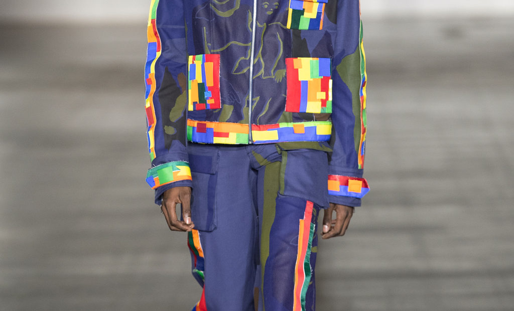

Moda Artesanal y Sostenibilidad: Un Binomio Poderoso
La moda artesanal en Colombia representa un puente entre tradición y futuro sostenible. Muchas comunidades indígenas y rurales han desarrollado durante siglos técnicas de tejido, bordado y teñido natural que hoy se integran en el diseño contemporáneo. Estas prácticas no solo son respetuosas con el medio ambiente, también preservan la identidad cultural del país.
En la moda artesanal, el proceso importa tanto como el resultado. Las prendas se hacen con tiempo, cuidado y en muchos casos, a mano. Usar una de estas piezas es vestir una historia, una cosmovisión, una comunidad. Es valorar lo humano detrás de cada costura.
En Bogotá, marcas como Kuna Mya, Entretejidas y Hilo Sagrado están elevando estas propuestas con un enfoque ético y de alta calidad. Son prendas que no siguen tendencias efímeras, sino que proponen un estilo atemporal, profundamente conectado con la tierra y las raíces.